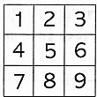
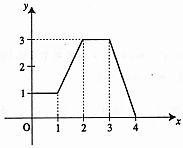

- \(\dfrac{8}{27}\)
- \(\dfrac{16}{81}\)
- \(\dfrac{81}{16}\)
- \(\dfrac{27}{8}\)
- \(\dfrac{64}{81}\)
Mathematics·Studies (I)
Nat. Sciences

Consider a target marked with numbers from \(1\) to \(9\)
as shown to the right.
\(5\) shooters \(\mathrm{A, B, C, D}\) and \(\mathrm{E}\) each shot \(10\) times,
and each person hit \(10\) numbers with a mean of \(5\).
The results of the \(5\) people are as follows.

- \(\mathrm{A}\)
- \(\mathrm{B}\)
- \(\mathrm{C}\)
- \(\mathrm{D}\)
- \(\mathrm{E}\)
- \(-1\)
- \(1\)
- \(-i\)
- \(i\)
- \(1998\)

- \(1\)
- \(\dfrac{3}{2}\)
- \(2\)
- \(\dfrac{5}{2}\)
- \(3\)
- If a coin is tossed \(10\) times, the probability that it lands on heads \(4\) times is equal to the probability that it lands on heads \(6\) times.
- The probability that a coin tossed \(10\) times lands on heads \(5\) times, is equal to the probability that a coin tossed \(20\) times lands on heads \(10\) times.
- The probability that a coin tossed \(10\) times lands on heads \(5\) times or less, is greater than \(0.5\).
- a
- c
- a, b
- a, c
- a, b, c